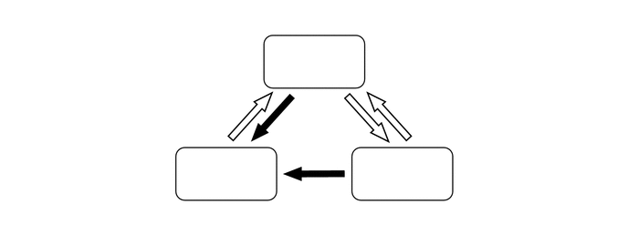

NM3140CG
_54
制动
_025047
制动控制/动态控制系统
_0120069
制动控制系统
DE
详情
F
制动控制/动态控制系统 制动控制系统 详情 VSC OFF 开关
功能
a.
通过 VSC OFF 开关可停止运行 VSC 和 TRC 功能。车辆在路肩或土路上行驶时，停止发动机输出功率控制以保持驱动扭矩。
b.
VSC OFF 开关可选择 3 种模式（正常模式、TRC OFF 模式和 VSC OFF 模式）。 短按 VSC OFF 开关时，将进入 TRC OFF 模式并禁用 TRC 功能。 按住 VSC OFF 开关 3 秒或更长时间时，将进入 VSC OFF 模式并禁用 TRC 和 VSC 功能。
c.
TRC OFF 模式或 VSC OFF 模式下将点火开关置于 OFF 位置后，再次将点火开关置于 ON 位置将选择正常模式。 TRC OFF 模式下车速增加时，此系统也将自动进入正常模式。

3.49,0.604 3.802,0.76
0.313,0.156
10
false
*a
2.5,1.896 2.813,2.052
0.313,0.156
10
false
*b
4.49,1.885 4.802,2.042
0.313,0.156
10
false
*c
| *a | 正常模式 | *b | VSC OFF 模式 |
| *c | TRC OFF 模式 | - | |

|
VSC OFF 开关操作（按住 3 秒或更长时间） | 
|
VSC OFF 开关操作（短按） |
d.
各模式下制动控制功能的运行情况如下：
| 模式 | 制动控制功能 | 组合仪表总成 | ||
|---|---|---|---|---|
| TRC | VSC | VSC OFF 指示灯 | 多信息显示屏 | |
|
*：施加制动或横摆率较大时，将执行控制功能。 |
||||
| 正常模式 | 可控制 | 可控制 | - | - |
| TRC OFF 模式 | 不可控制 | 可控制 | - | 显示 TRC OFF 信息 |
| VSC OFF 模式 | 不可控制 | 不可控制* | 点亮 | 显示 TRC OFF 信息 |